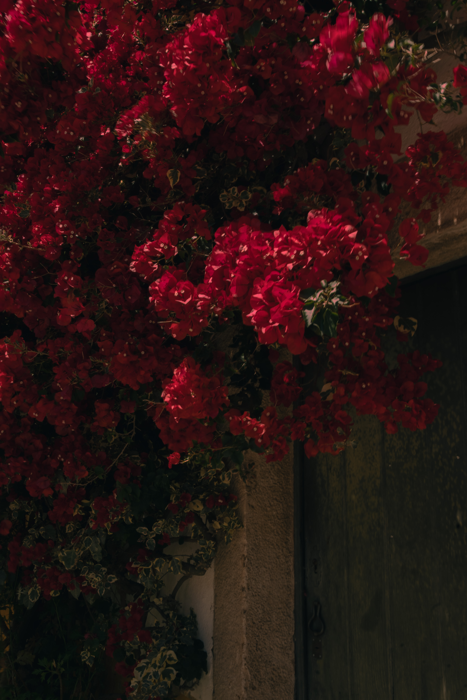
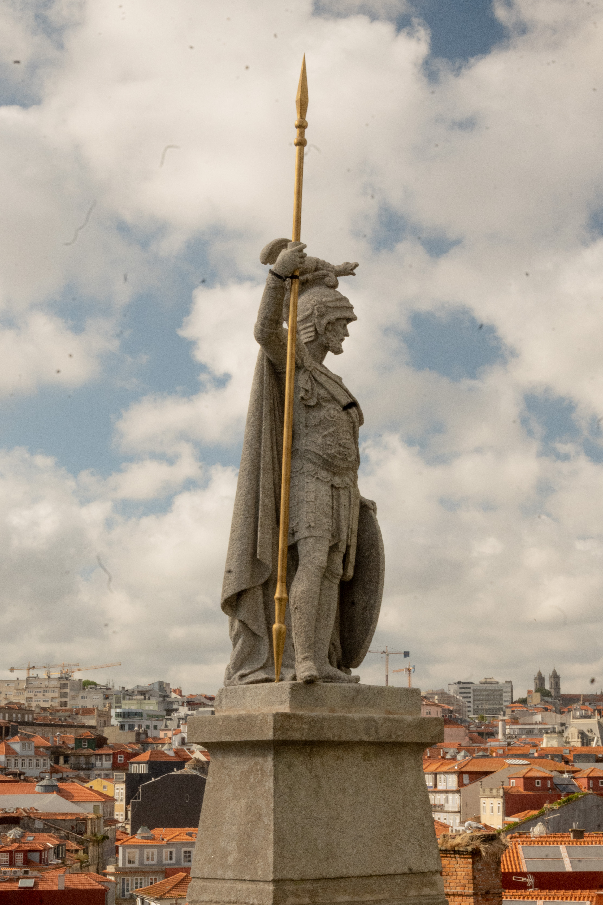
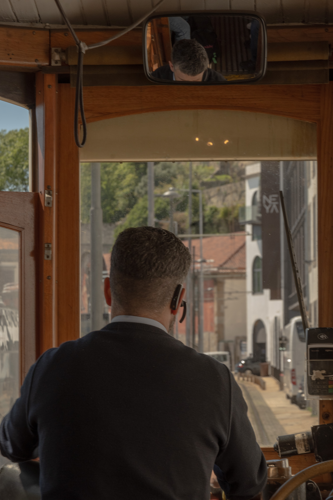
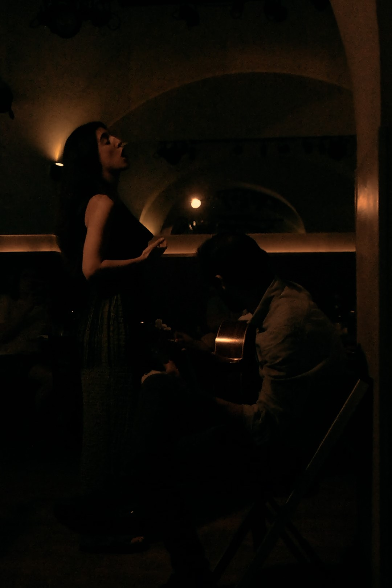

Overlooking Sintra, Portugal. Photos by the author
If I had the world in my hand, I’m quite sure I would trade it for a ticket to Rua dos Douradores.
— Fernando Pessoa
There was a woman who graced the streets of Lisbon. She had deep-set eyes, subtle creases of age that seemed only to make her fairer, a cigarette wisping away between her fingers, her form cinched by an olive silk dress. Her husband straddled her by the hip, gazing at her from time to time, as they walked. And she walked as if she owned the world.
I watched as she walked up the street to Praça de Luís de Camões. She grew smaller and smaller, her past, present and future unknown and unknowable. And I never saw her again.
Millions like her roam the cities and towns of Portugal, this small but formidable coastal strip on the Iberian Peninsula. To assume the role of the tourist is to feel as if strings are attached from my own heart to the hearts of those millions, to feel the tension of an unrealized connection as our paths briefly collide, and, as they then diverge again, to watch without feeling as those strings tear and break.
Fernando Pessoa, the belatedly beloved Portuguese poet and author, wrote, in The Book of Disquiet: “By day I am nothing, by night I am I.” In its original context — long story, but a highly recommended read — it’s a brilliant, and efficient, commentary on the soulless nature of capitalist labor; but it also captures, unlike anything else, what I have felt in the seventeen days I have spent wandering this country. I exist in the spaces I visit as, essentially, nothing, and I leave no trace of myself except in the waste that I produce. The “people of Portugal” are an ambiguous collective, inscrutable from the outside; and any individuals I may meet from the group I do so only trivially — taxi drivers, waiters, receptionists — and leaves me with more questions than answers as to the sentiments, experiences and social contexts that together form, at least loosely, a national identity.
Perhaps the lesser appreciated aspect of tourism is that such a thing is almost impossible to learn, and there is no incentive to do so. And so it remains that, after seventeen days, I leave just as much a stranger as I was when I first stepped foot in Lisbon. When I return to my hotel room each night, having traveled for hours through some of the most beautiful spots in the entire world, all that is left is just me.
I have lamented that fact for many of those nights. But I have the privilege of reminding myself that I may yet have a long life ahead, and there will still be time to learn, to absorb, to become something. And in the meantime, I can find solace in the fact that I have, nonetheless, fallen in love with Portugal.

Flowers hang over a door in Óbidos.

Standing guard over Porto.
The Porto Cathedral.
In the countries that others go to, they go as anonymous foreigners. In the countries I’ve visited, I’ve been not only the secret pleasure of the unknown traveller, but also the majesty of the reigning king, the indigenous people and their culture, and the entire history of the nation and its neighbors. I saw every landscape and every house because they were me, made in God from the substance of my imagination.
— Fernando Pessoa
I do not remember being in Porto, but I remember Porto being all around me. The first night, when everything was new, I was pleasantly shocked to discover it was hardly new at all. Narrow stone paths careened through three-story apartments, vines climbed the walls, and the wind carried the humid scent of drying laundry. Antiquated brick-and-tile houses were fitted with jarringly modern padlocked doors. Instantly I was reminded of the countryside in Korea, where, save for the azulejo and omnipresent Christian symbolism, that same jarring contrast exists — an old way of life persisting in tandem with technological advances.
In a way, the similarity is more than a coincidence. As with Korea, Portugal has also undergone massive socioeconomic development in the past few decades, after a left-wing military coup d’etat overthrow the Salazar dictatorship on April 25, 1974.
But Portugal is particularly intriguing in just how left-wing — at least in name — the transition since then to a modern democracy has been. The Socialist Party was the first governing party to be democratically elected after the coup; even today, it holds a strong foothold in Portugal’s parliament, holding an equal number of seats to the currently ruling Social Democratic Party. (The PPD/PSD rules as a coalition with the Christian right-wing People’s Party.) A welfare state is pretty well-established, with universal healthcare, Social Security, and, especially as an American, admirable provisions for maternal/paternal and sick leave.
It goes without saying that this hardly renders Portugal a utopia. Crisis after crisis — the sudden and violent period of decolonization following the 1974 coup; years of internal political turmoil after said coup, including two more — failed — coups; and the Great Recession — have dealt major blows to economic growth. The minimum wage as of January is a pithy 820 euros a month, and the average wage barely above that at 1,463 euros; meanwhile, the rent is easily 1,000 euros or more, and it’s only going to get worse. Gentrification abetted by tourism is a real threat, and conservatives no doubt have their own version of grumbling about migrants from their ex-colonies and other countries. Many in the younger generation are looking to leave for better opportunities abroad.
In the graffiti lining the walls I also sensed an undercurrent of frustration and angst about Israel’s genocide in Gaza. Many spray-painted messages demanded a free Palestine; in Braga, posters plastered on a wooden board called on passersby to join a protest later that week demanding an end to the genocide. Interestingly, the political class also has a certain pro-Palestine streak: The parliament has recognized the Nakba since before 7 October, and the president called for an immediate cease-fire in Gaza after Israel began bombarding Rafah in late May — though one wonders if that was thirty thousand killed Palestinians too late. But the government has yet to take the ultimate step of recognizing Palestine as a state, which, according to reports from inside sources, would only happen when the E.U. reaches a broader consensus.
If any of the locals I met were disgruntled or disillusioned by all this, they betrayed none of it to me. Everyone was extremely kind and welcoming — the only exception being a ticket office worker at a Lisbon train station; but she had just managed to shake off another customer who was screaming about some issue with his transport card, and when my turn came around, she seemed more angry at the world than at me in particular — and spoke much better English than I could ever hope to speak in Portuguese. It was both comforting and unbearably humiliating whenever a person would first speak in Portuguese, assuming the same of myself, then switch to English without a hint of judgment.
It was in Porto that I came across my new favorite band. The morning after I arrived, I set out, alongside some twelve others, on an eight-hour guided tour of the hottest spots downtown: jaw-dropping cathedrals, stunning views of the uniform red-tiled roofs, mind-melting blue-hued landscapes on azulejo tiles spanning the entire lobby of a train station. Then, nearing the end of that tour, we arrived at the Jardim do Morro. We heard the place before we saw it — a wall of sound. I don’t even remember what was playing. I just gravitated toward the source, as if under a spell.
For the past several months I had been engrossed in the vast oilfield that is rock music — everything from Deftones to Three Days Grace to TOOL to Breaking Benjamin. For some reason, it was a sound that I presumptively left behind when I arrived in Portugal; yet here I was, riverside on a summer’s evening in Porto, blessed with the same sounds I had grown to love.
It was a four-person band, and they had amassed at least 100 people on what was essentially a small hill, blasting covers of rocks anthems alongside original songs, some of them unreleased. Down the River, as they’re called, seem to have been at this spot in Porto for at least several months; a music video from October shows them diving off the Dom Luís I Bridge, just meters from where I first found them.
The Mosteiro da Serra do Pilar — where our tour came to an end, as we watched the sun set over a peaceful but bustling neighborhood — appears in the background of that music video in a threatening red, as the lead vocal, Rike Barbosa, sings:
There’s a heaven
In my reach
I try my best not to let it slip
There’s a razor
In my teeth
Cut my lips and let it bleed
I’ll wait for the sun to die on me …
Because I’m the size of what I see
And not the size of my stature.
— Fernando Pessoa
Earlier I mentioned Portugal was small but formidable. That is both in the sense that its geographical size must never be underestimated — the major cities in northern Portugal alone are each an hour apart by train — and that its public transit infrastructure is strikingly robust, though, I admit, it still suffers from the same flaw that pervades all of Portugal’s public services: the systems to access public transit are exceedingly complex, and it appears to be some cardinal sin to post signage that explains in any helpful capacity how said systems work. But eventually, as everyone does, I managed to figure it out and catch an early-morning train to Braga.
When I arrived, it was still early enough that a heavy fog buried the heavens. As I walked down Rua Dom Gonçalo Pereira, feeling quite ravenous and searching for a brunch spot as if in a trance, I saw a man walk by in a toga and had to do a double-take. Then there was another man in a toga, then a woman, then an entire choir of children. That day was, by some coincidence, the first day of the annual Braga Romana festival. The four-day celebration is so local that any information about it in Portuguese is sparse, and practically nonexistent in English. The festival does have its own website — completely in Portuguese — but after reading a machine-translated version of the About section I felt as if I knew less than when I started.
From what little I could gather, Braga was founded as Braca Augusta, the capital of the Roman province of Gallaecia, in 16 B.C.E. In the more than two millennia since, the city has had quite the transformation, to say the least, playing pivotal roles in the Reconquista and the founding of modern Portugal; but through Braga Romana a general pride for those origins still survives.
It was only later in the afternoon, after I had scaled up the hundreds of steps to Bom Jesus do Monte then back down, that I witnessed the festivities in full swing. Vendors under canopies sold various foods and trinkets; dozens encircled a stage where a masked woman, backed by droning bagpipes and the frenzied beating of drums, danced as if possessed, twitching — though quite elegantly — and spinning in circles, clasping the wreath atop her head with both hands. I couldn’t watch for long — the train back to Porto was imminent — but in those short moments I was left deeply moved at the unimaginable scale and diversity of the human race, divided by nation but united by the same desire to live and to enjoy life.
Lisbon was a blur. Part of it was the sweltering European heat, which people already living in Lisbon seemed to readily ignore. Many times I swore I was close to death while wearing the lightest gym wear I owned, while actual Lisbonese men strutted by me clad in a black suit and tie — or, at the very least, dress pants. Showing one’s legs is apparently some kind of cardinal sin in this continent.
But it was also the fact that the city is so large and bustling with activity and steeped in so much history and just generally is so much that, at some point, it all becomes incredibly overstimulating. It seems there’s a public square every two or three blocks, with a different statue honoring a figure who was influential in some way to Portugal’s history or culture: Luís de Camões, the nationally revered poet; King José I at Praça do Comércio, where the Supreme Court is also located; and King Pedro IV at the Rossio, to name a few. (In the shadow of Camões’ statue sits a bronze sculpture of Pessoa, sitting at a specially reserved table outside the cafe he used to frequent.) Even the most urban part of Lisbon is so decentralized that just one corner of it is worth a day trip of its own — never mind all the municipalities peppered across what is considered the Lisbon metropolitan area: Algés, Caxias, Sintra, Paço de Arcos, Oeiras, Cascais. And to think all this was what remained or was rebuilt after the devastating earthquake, in 1755, that had leveled much of the city.

A tram running alongside a section of the Rio Douro.
Looking at the Bom Jesus do Monte.

Singing fado at a restaurant in Lisbon's Pink Street.
One of the better known, however feeble, attempts to condense the experience is the Lisboa Card, a one- to three-day pass that grants free access to most public transport in and around Lisbon as well as fifty-one “museums, monuments and places of interest.” (A one-day pass goes for about twenty-five euros.) God knows what company even operates that thing, but perhaps it is worth the purchase for those who only plan to stop by for only a short while.
But I planned to stay for twelve days, and not just to see museums and monuments. So I skipped that and kept to a humbler Navegante transport card, a flimsy school-bus-yellow paper rectangle that was somehow NFC-enabled. (Residents can apply to get a proper plastic card that’s more black than yellow, and the fare is cheaper.) Technology can work wonders when your government actually invests in public transit. With that one card, I could go all throughout Lisbon and even beyond, from the gorgeous beaches in Cascais to the idyllic streets of Setúbal, all in under two hours and with very little hassle. Even at 10 p.m., there was still a way to go from central Lisbon to my hotel in Oeiras, even if the route was a little convoluted.
That, for me, was the real takeaway from those twelve days of touring Lisbon. The destinations themselves I remember only as brief splotches of color, but the ease of access to those places inspired me to visit them again sometime — and God willing, I will soon.
Having written most of my work in Sintra, where I have so often dreamed and worked, I would like to stay there forever … I would like to be buried by one of those poetic footpaths that lead to the Castelo dos Mouros … To be close to men, my brothers, and closer to the moon and the stars, my friends, with the green earth in front of me and the sea stretching into the distance — the sea and the earth that I have loved so much.
— José Maria Ferreira de Castro
In Sintra I lost myself, and in doing so I found myself. The summer heat, a patient predator, slowly consumed my capacity for feeling until I could feel nothing at all. As I walked the steep path up to the Castelo dos Mouros, I noticed less and less the sweat caking my skin, the lactic acid building in my calves, the crackling sensation of my throat growing parched. I felt myself melt into the dirt and the stones and the looming trees overhead.
I thought of the millions, or perhaps billions, who had walked this path before me. The Castelo dos Mouros came to be in the eighth and ninth centuries when the Iberian Peninsula was under Muslim rule, and since then all kinds of people must have dragged their feet across this same patch of earth: kings, warriors, messengers, worshipers, tourists. All of them driven to the same end, and yet before then having experienced this unique and bizarre thing we call life, having felt joy, anger, pain, sorrow, love. I felt myself walking among them. I felt myself looking down, alongside them, at the blanket of red-tiled rooftops, from the bends in the path where the canopies made way for a window.
And then I thought nothing at all. I just kept looking.